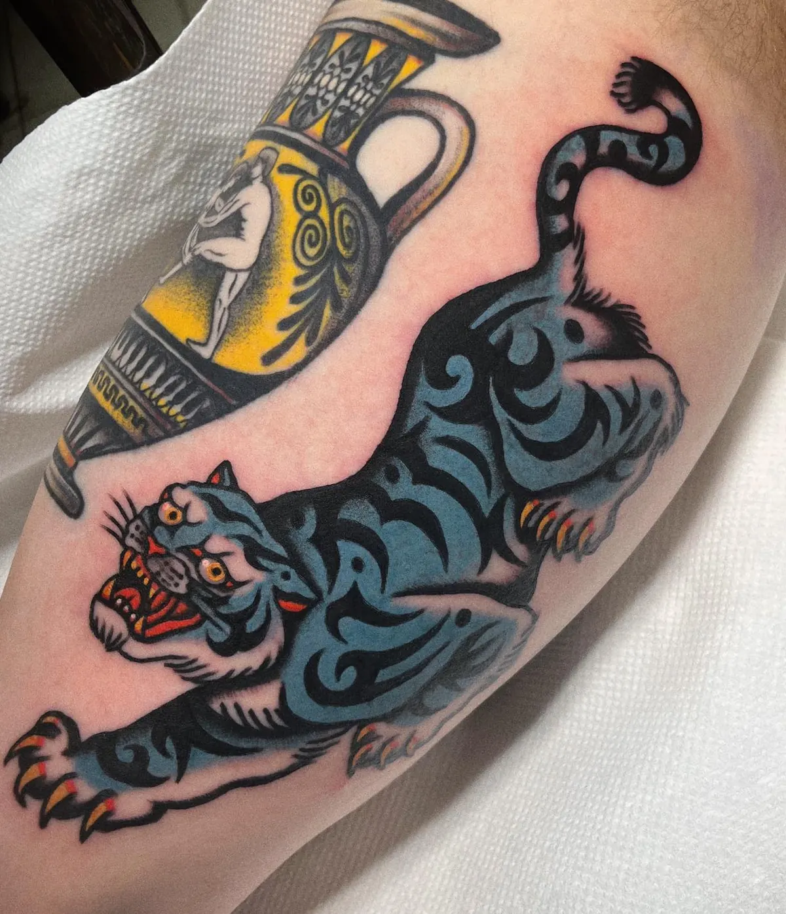
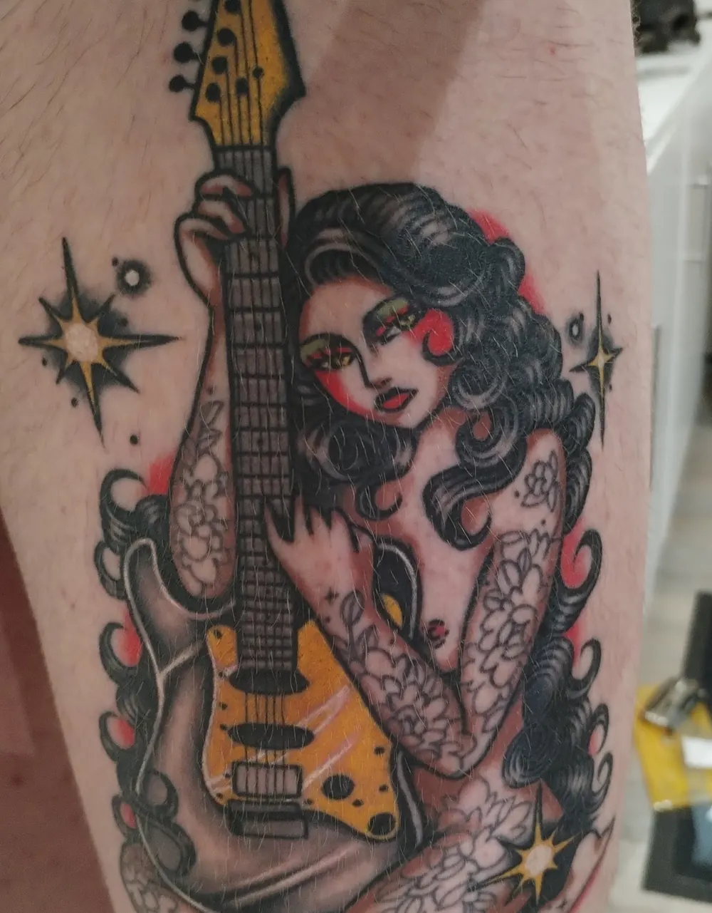
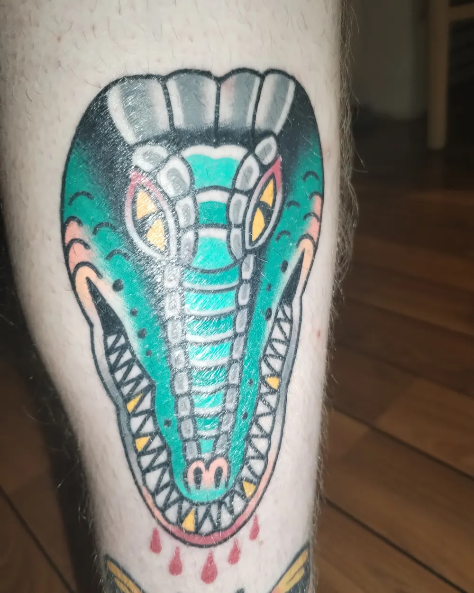
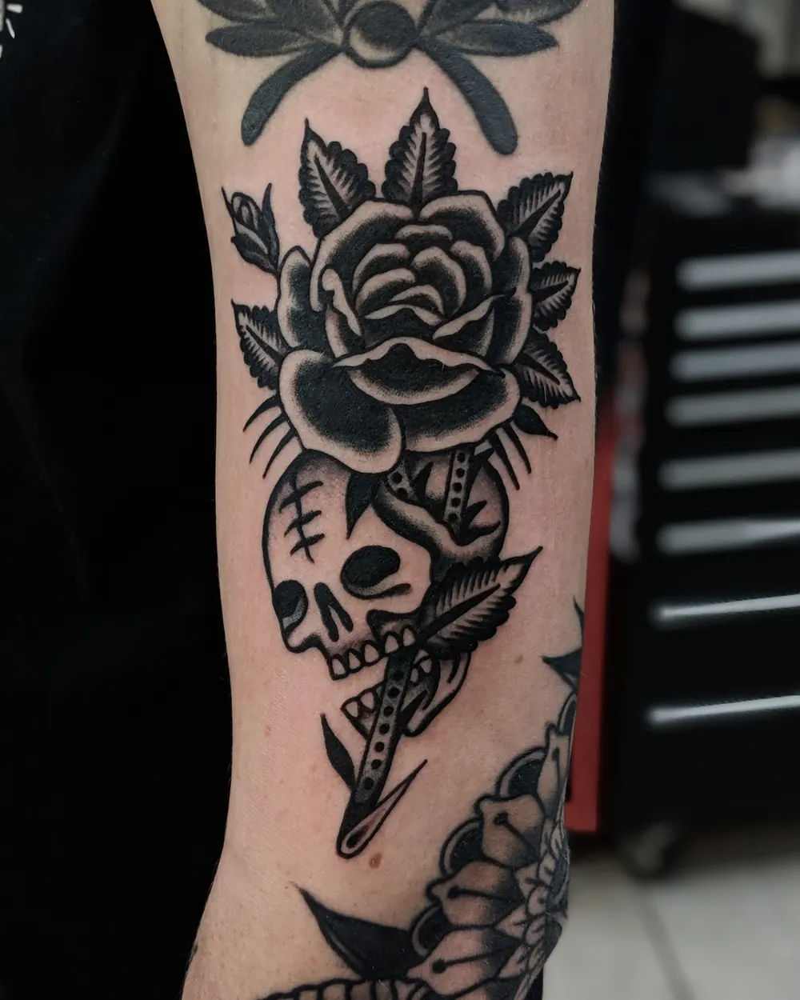
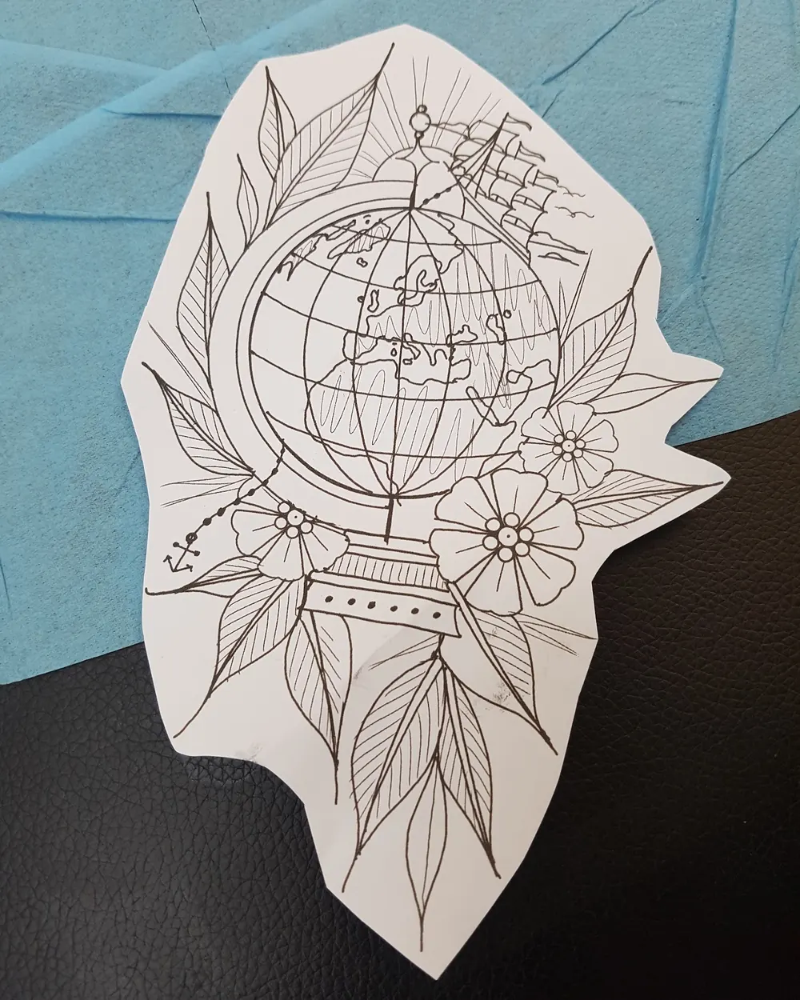
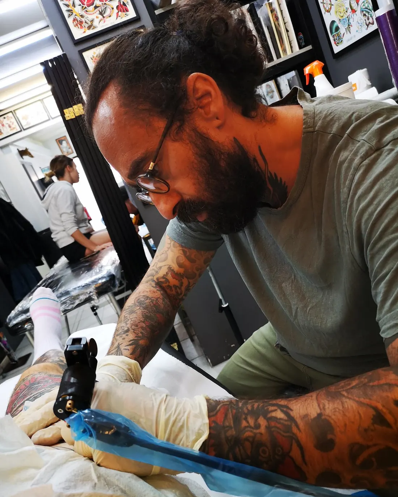
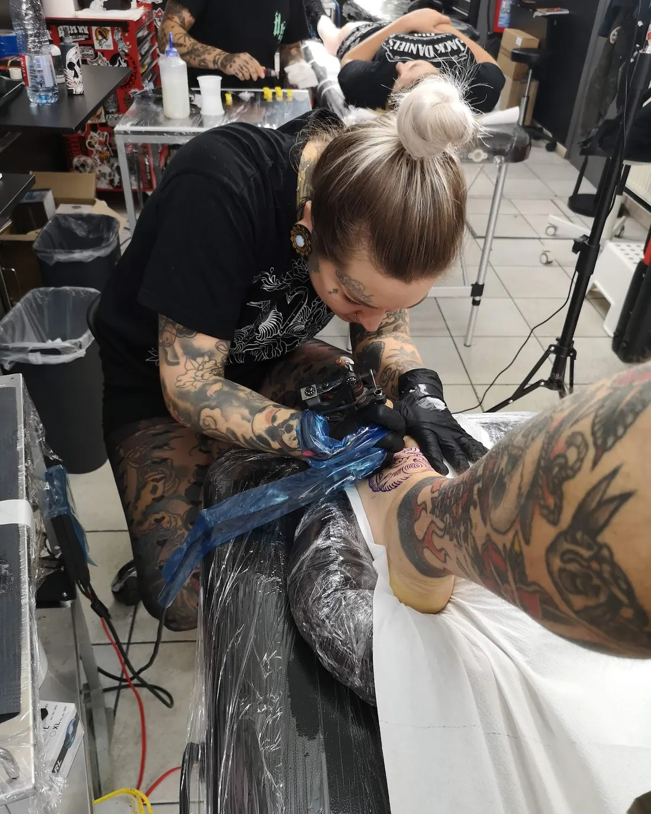
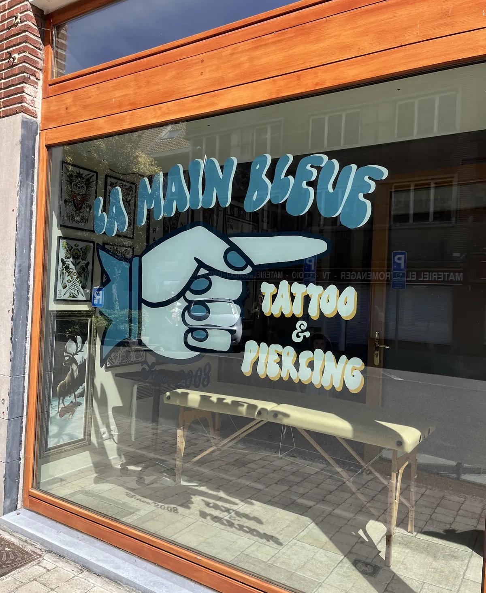

La MainBleue
Une idée en tête ? Elle se dessine ici, Rue Grande, depuis 2008.
Salon de tatouage et de piercing à Saint-Ghislain, avec des tatoueurs et tatoueuses résidents et des guests de passage. Un accueil que les clients disent « chaleureux, professionnel, à l’écoute ». Décrivez votre projet en deux minutes, choisissez un créneau de consultation.



★★★★★« […] Rempli de bons tatoueurs et tatoueuses qui ont des idées à la pelle […] »
Tigre, rose, pin-up : l’encre sort d’ici.
Trait noir appuyé, aplats francs, couleurs qui claquent sur la peau : quelques pièces publiées sur la fiche Google du salon. Un style vous parle ? Touchez « Ce style me plaît », il s’ajoute à votre demande de projet.


Photos reprises de la fiche Google de La Main Bleue. Sur le vrai site, le salon ajouterait ses nouvelles pièces en quelques secondes.
Plusieurs mains, résidents comme guests.
La vitrine le dit en lettres peintes : tattoo & piercing, depuis 2008. Derrière, des planches de flash encadrées couvrent les murs et plusieurs postes tournent en même temps. Théo résume : « un très beau salon avec des tatoueurs et tatoueuses de talent, résidents comme guest ».



4,8 sur 5, et des mots qui rassurent.
Un premier tatouage, un piercing, une pièce de plus : ce que les clients retiennent tient souvent en une phrase. Les voici telles qu’ils les ont écrites.
[…] à l’écoute qui rassure […]
Siham · venue pour un piercing
[…] des idées à la pelle […]
Cedric R. · sur les tatoueurs et tatoueuses
Tout s’est bien passé, du premier contact à la cicatrisation.
Claire D. · tatouée au salon
Votre idée sur la table, en deux minutes.
Le type de projet, puis un créneau de consultation dans les heures d’ouverture, du mardi au samedi entre 12 h 30 et 18 h. Ensuite la zone, la taille, le style et l’idée : en quelques mots, ou avec une pièce de la galerie.
Aujourd’hui, La Main Bleue se joint par Facebook ou par e-mail. Sur le vrai site, chaque demande arriverait complète (zone, taille, style, idée, créneau), avant même le premier message.
Suivez la main bleue.
- LundiFermé
- Mardi12 h 30 – 18 h
- Mercredi12 h 30 – 18 h
- Jeudi12 h 30 – 18 h
- Vendredi12 h 30 – 18 h
- Samedi12 h 30 – 18 h
- DimancheFermé
La Main Bleue · tattoo & piercingRue Grande 61, 7330 Saint-Ghislain